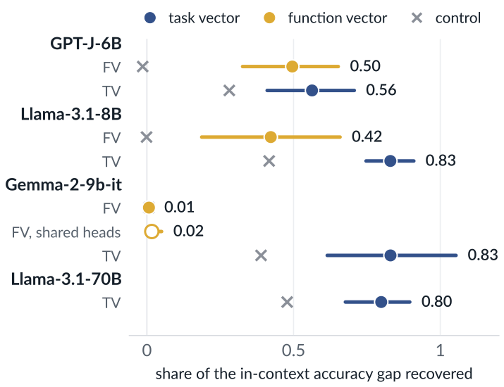
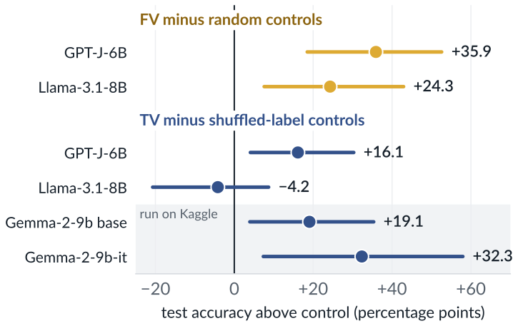
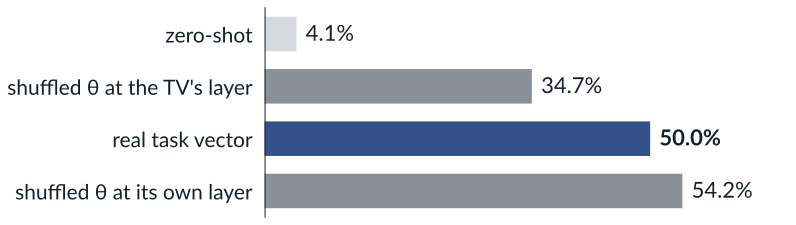
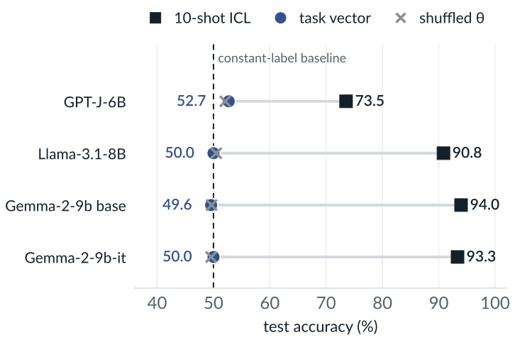
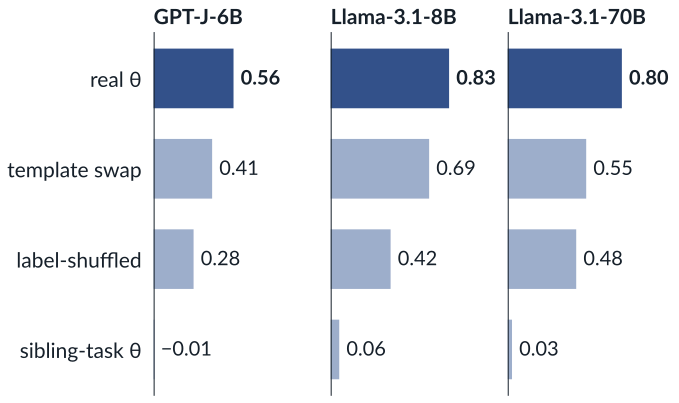

Background
Function vectors (FVs)[1] add the summed outputs of causally selected attention heads to the residual stream. Task vectors (TVs)[2] copy one hidden state from a demonstration prompt into a zero-shot pass. Both papers claim the vector carries an in-context task into a new prompt.
Setup
- GPT-J-6B (used by both papers), Llama-3.1-8B and 70B, and Gemma-2-9b in base and instruction-tuned versions.
- 16 word-pair tasks from [1], scored by top-1 first-token accuracy.
- Random vectors and random heads as FV controls; label-shuffled demonstrations as TV controls.
Test 1: Exploratory grid

The Gemma-2-9b-it FV recovers 0.01. Scaling it 8×, injecting before the post-attention RMSNorm, or picking up to 40 heads by cross-task AIE as in [1] does not restore a consistent advantage.
Test 2: Held-out layer selection
Vectors are built on construction inputs. Each vector and each control picks its layer on dev inputs and is scored once on test.


At the TV’s layer, a shuffled-label vector scores 34.7%. At its own layer it scores 54.2%, against 50.0% for the real TV, so the Llama-3.1-8B comparison is inconclusive.
Gemma base vs instruction-tuned (Kaggle)
Both checkpoints share partitions and demonstrations. Kaggle and NDIF agree on 197 of 200 predictions in a limited check (Gemma IT, antonym).
| FV, test accuracy (%) | ICL | FV | control |
|---|---|---|---|
| base, antonym | 70.0 | 0.0 | 0.0 |
| base, country-capital | 98.7 | 0.0 | 0.0 |
| IT, antonym | 68.0 | 0.0 | 0.0 |
| IT, country-capital | 90.7 | 0.0 | 0.0 |
On these two tasks the base checkpoint fails too, so instruction tuning alone does not explain our FV null.
Limitations
- Our FV recipe picks 10 heads per task and skips the ICL-correct filtering of [1]; the Gemma null is about this implementation.
- Shuffled controls can keep some correct pairs.
- The Gemma TV and sentiment extensions were specified after earlier results. First-token accuracy only.
Test 3: Sentiment with arbitrary labels
Positive reviews map to A and negative to B, or the reverse, so label meaning gives no help[4]. ICL learns the mapping. The TV does not.

In 18 of 24 arbitrary-label cells, the patched model gives every input the same label. Natural labels do no better (49.2–50.0%).
What a shuffled θ keeps

Shuffled-label states still recover 0.28–0.48 of the ICL gap (real: 0.56–0.83); a sibling task’s vector recovers almost none. An x -> y extraction template raises GPT-J capitalization from 0.47 to 0.97.
Conclusions
- Success on word pairs does not show broader task transfer. On sentiment, TVs stay near chance on all four checkpoints.
- Controls need their own held-out layer. Gains over zero-shot accuracy can overstate transfer.
- Our FV implementation works on GPT-J and Llama-3.1-8B and fails on both Gemma checkpoints in a two-task follow-up. The cause is open.